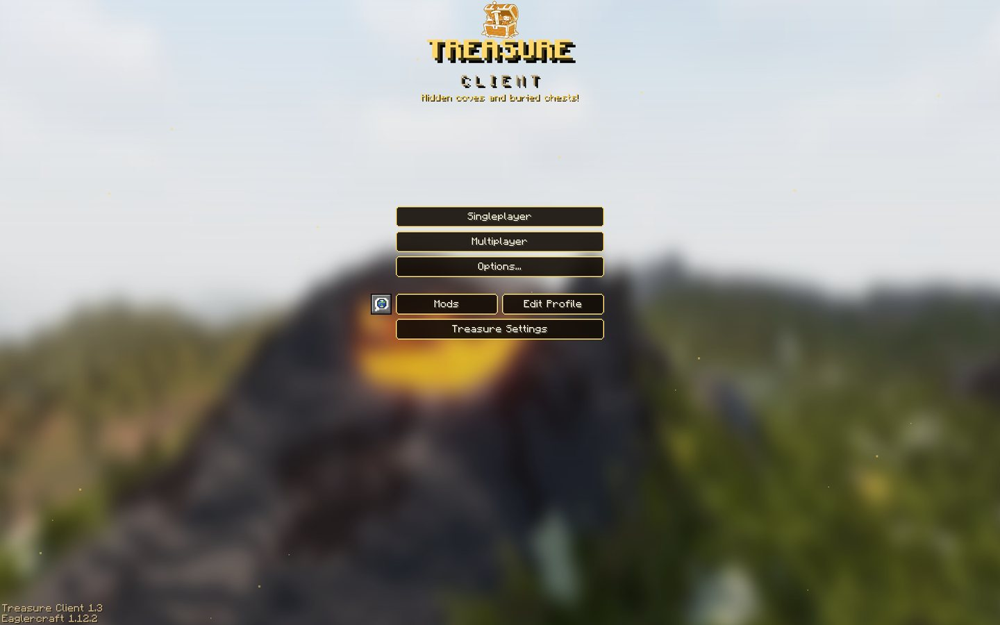

Latest release
TREASURE CLIENT
Everything you need in one chest
Treasure Client is a free Eaglercraft 1.12.2 client with a mod menu, performance mods, themes, and modern items and blocks on newer servers.

Play
Play right in your browser. WASM is faster. Use JS if WASM doesn't load on your device.
Beta
Version 1.3 Beta
The newest version before its release. May have bugs.
Download
Download a single .html file and open it in your browser anytime, even offline.
Latest release
Version 1.2
Features
Mod Menu
Turn mods on and off and change their settings in game. Includes Zoom, Toggle Sprint, Toggle Sneak, No Hurt Cam, TNT Timer, Low Fire, Low Shield, Small Totem, Fullbright, Hitboxes, a custom crosshair and more.
HUD Editor
Drag the FPS counter, CPS counter, ping display and other HUD mods wherever you want them on screen.
Themes
Five themes: Treasure, Frost, Tropical, Terracotta and Forest. Each one changes the menus and the background.
Modern Items and Blocks
On newer servers, items like spears, maces and wind charges show up as the real thing instead of old stand-ins. Spears work, and modern blocks show up on servers that support them.
Updated Textures
Blocks, items and potions use their current textures and colors from the newest Minecraft.
No Install
Play right here in the browser, or download a single .html file and open it anytime, even offline.
Changelog
1.3 BetaOptimization update
Still in beta. Play it from the Beta card in the Play section.
Performance
- New "Performance modpack" switch in the mod menu, on by default
- Celeritas (Sodium-style) chunk renderer, with Celeritas Extra and Leaf Culling
- Entity Culling, Particle Culling and Entity Render Distance
- ImmediatelyFast: cheaper name tags and sign text, and the HUD is only redrawn when it changes
- Lithium, FerriteCore, FoamFix-style memory savings, TexFix, CensoredASM, BetterFps, Krypton, C2ME, VanillaFix, Enhanced Block Entities, Particle Core, No Chat Lag, AI Improvements, Dynamic FPS and Memory Saver
- Smoother chunk loading: chunk building can't freeze a frame anymore
- TNT and zombie optimizations
- Optional Dynamic Resolution (off by default)
New
- Sodium-style Video Settings with every setting in one place and a description for each
- New Mods screen
- Tier Tagger, Clear Water, Saturation display and Hit Color
- 1.7 Animations: sweep and sprint hits swing differently, and items dip while on cooldown
.lagand.perfchat commands to find out what's causing lag
Fixed
- Eating getting stuck (crumbs but no eating)
- Golden apple eating
- Bows and eating cancelling on modern servers
- Explosion knockback not always applying
- Screen randomly jumping when moving the mouse
- Totem animation showing in the wrong place
1.2Themes and modern items
Added mods
- Low Fire
- Low Shield
- Small Totem
- Password Hider
- ViaVersion
Mod menu redesign
- New side tabs (Modules, HUD Editor, Themes)
- New Treasure Client logo
- Themes: Treasure, Frost, Tropical, Terracotta and Forest
- Theme backgrounds on the main menu and other menus
ViaVersion
- Modern blocks and items show up on newer servers
- Modern items (wind charge, mace, spears, copper and more)
- Old block and item textures updated to the new ones
- New potion colors
- Spears work on newer servers (jab and charge)
Fixed
- Mod menu scrolling with the mouse wheel
- Pink potion textures
- Mods turn on with one click now
- Netherite armor not showing when worn
1.1New mods and fixes
Added mods
- No Hurt Cam
- TNT Timer
- Smooth Zoom
Mod menu redesign
- Settings boxes for each mod
- Reorganized tabs
Fixed
- Mod menu search
- Toggle Sprint
- Toggle Sneak
- Mods no longer work while turned off
1.0 BetaFirst release
- First version of Treasure Client
- The JS version is very laggy, so use WASM if you can
FAQ
Should I use WASM or JS?
Use WASM. It runs a lot faster. The JS version is there for older browsers and devices where WASM doesn't load.
How do I play offline?
Download the WASM or JS file from the Download section and open it in your browser. You don't need an internet connection for singleplayer.
Which servers can I join?
Any Eaglercraft 1.12 server. Modern items, blocks and spears show up on newer servers that support them.
Is it free?
Yes. No account or payment needed.
Is the source code available?
Yes. The full source is on GitHub: Treasure-Client-1.12-src. The WASM branch has the WASM version and the JS branch has the JS version.